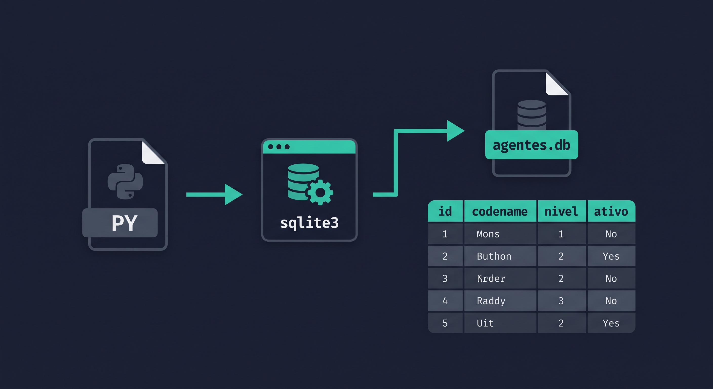
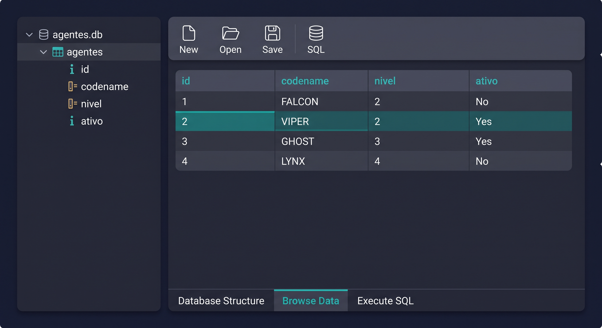

UC00606 · Aula 10
SQLite — persistência com superpoderes
O JSON funciona… mas tem limites
❌ Com JSON
# Para encontrar agentes nível > 3:
with open("agentes.json") as f:
todos = json.load(f) # carrega TUDO
ativos = [a for a in todos
if a["nivel"] > 3]
# O(n) — percorre sempre tudo✅ Com SQLite
conn = sqlite3.connect("agentes.db")
cur = conn.cursor()
cur.execute("""
SELECT * FROM agentes
WHERE nivel > 3
""")
# Só os que interessam!Uma base de dados num único ficheiro
agentes.db — podes copiar, enviar, fazer backup.
import sqlite3 — sem instalação, sem servidor.

Ferramenta gratuita para explorar ficheiros .db sem código
CREATE TABLE completo.

🔗 sqlitebrowser.org — gratuito, Windows/Mac/Linux
Connection + Cursor — o padrão do sqlite3
import sqlite3
# Ligar (cria o ficheiro se não existir)
conn = sqlite3.connect("agentes.db")
# Cursor — executa os comandos SQL
cur = conn.cursor()
# ... operações ...
# Guardar alterações e fechar
conn.commit()
conn.close()conn.commit() → guardaconn.close() → fecha
cur.execute(sql) → corre querycur.fetchall() → obtém resultados
with garante que a conexão é sempre fechada
❌ Forma frágil
conn = sqlite3.connect("agentes.db")
cur = conn.cursor()
cur.execute("SELECT * FROM agentes")
# E se houver um erro aqui?
# conn.close() nunca é chamado!
conn.commit()
conn.close()✅ Forma correta
with sqlite3.connect("agentes.db") as conn:
cur = conn.cursor()
cur.execute("SELECT * FROM agentes")
resultados = cur.fetchall()
# conn é fechado automaticamente
# mesmo que ocorra um erro!with chama conn.__exit__() no fim — que faz commit() se correu bem, rollback() se houve erro. Aprendemos with open() para ficheiros — é o mesmo princípio.
Tudo o que fazemos com dados resume-se a 4 ações
INSERT INTO agentes ...
SELECT * FROM agentes
UPDATE agentes SET nivel = ?
DELETE FROM agentes WHERE id = ?
Definir a estrutura dos dados antes de os guardar
with sqlite3.connect("agentes.db") as conn:
conn.execute("""
CREATE TABLE IF NOT EXISTS agentes (
id INTEGER PRIMARY KEY AUTOINCREMENT,
codename TEXT NOT NULL UNIQUE,
nivel INTEGER NOT NULL DEFAULT 1,
ativo INTEGER NOT NULL DEFAULT 1
)
""")IF NOT EXISTS — só cria se a tabela ainda não existir. Seguro para chamar sempre ao iniciar o programa.
Nunca concatenes strings SQL — usa parâmetros
❌ Perigoso — SQL Injection!
nome = input("Codename: ")
# E se o utilizador escrever:
# FALCON'); DROP TABLE agentes; --
sql = f"INSERT INTO agentes (codename) VALUES ('{nome}')"
conn.execute(sql) # 💀✅ Seguro — parâmetros
nome = input("Codename: ")
conn.execute(
"INSERT INTO agentes (codename, nivel, ativo) "
"VALUES (?, ?, ?)",
(nome, 3, 1) # ← tuple de valores
)
# sqlite3 trata da sanitização? é um placeholder — o sqlite3 garante que o valor é sempre tratado como dado, nunca como código SQL. Sempre usar parâmetros.
Buscar exatamente o que precisamos
with sqlite3.connect("agentes.db") as conn:
cur = conn.cursor()
# Todos os agentes
cur.execute("SELECT * FROM agentes")
todos = cur.fetchall() # lista de tuplos
# Filtrar: ativos com nível > 3
cur.execute(
"SELECT codename, nivel FROM agentes "
"WHERE ativo=1 AND nivel > ?", (3,)
)
elite = cur.fetchall()
# Um agente pelo codename
cur.execute(
"SELECT * FROM agentes WHERE codename=?", ("FALCON",)
)
agente = cur.fetchone() # tuplo ou NoneNoneModificar registos existentes com segurança
with sqlite3.connect("agentes.db") as conn:
# Promover agente para nível 5
cur = conn.execute(
"UPDATE agentes SET nivel = ? WHERE codename = ?",
(5, "FALCON")
)
print(f"Linhas afetadas: {cur.rowcount}")
# Atualizar vários campos ao mesmo tempo
conn.execute(
"UPDATE agentes SET nivel = ?, ativo = ? WHERE codename = ?",
(3, 1, "GHOST")
)0, o codename não existia.
WHERE, o UPDATE afeta todas as linhas da tabela — cuidado!
Soft delete vs. delete real — quando usar cada um
✅ Soft delete (recomendado)
with sqlite3.connect("agentes.db") as conn:
# Desativar — dados ficam na BD
conn.execute(
"UPDATE agentes SET ativo = 0 "
"WHERE codename = ?",
("VIPER",)
)
# Dados históricos preservados!
# Pode ser reativado mais tarde.⚠️ Delete real (irreversível)
with sqlite3.connect("agentes.db") as conn:
# Apagar para sempre
cur = conn.execute(
"DELETE FROM agentes WHERE id = ?",
(2,)
)
print(f"Apagados: {cur.rowcount}")
# SEM WHERE = apaga tudo!
# conn.execute("DELETE FROM agentes")ativo = 0) em dados de negócio. Usa DELETE real para limpeza técnica — logs antigos, sessões expiradas, dados de teste.
row_factory — aceder por nome em vez de índice
❌ Sem row_factory
cur.execute("SELECT * FROM agentes")
for linha in cur.fetchall():
# linha é um tuplo
print(linha[1]) # codename?
print(linha[2]) # nivel?
# frágil — ordem importa!✅ Com row_factory
conn.row_factory = sqlite3.Row
cur = conn.cursor()
cur.execute("SELECT * FROM agentes")
for row in cur.fetchall():
# row acede por nome
print(row["codename"])
print(row["nivel"])
# legível e robusto!sqlite3.Row comporta-se como um dicionário mas também aceita índices. Define-se na conexão, antes do cursor.
Importar os agentes existentes para a base de dados
import json, sqlite3
def migrar(json_path, db_path):
with open(json_path, "r", encoding="utf-8") as f:
agentes = json.load(f)
with sqlite3.connect(db_path) as conn:
conn.execute("""
CREATE TABLE IF NOT EXISTS agentes (
id INTEGER PRIMARY KEY AUTOINCREMENT,
codename TEXT NOT NULL UNIQUE,
nivel INTEGER NOT NULL DEFAULT 1,
ativo INTEGER NOT NULL DEFAULT 1
)
""")
conn.executemany(
"INSERT OR IGNORE INTO agentes (codename, nivel, ativo) VALUES (?, ?, ?)",
[(a["codename"], a["nivel"], 1 if a["ativo"] else 0) for a in agentes]
)
print(f"✅ {len(agentes)} agentes migrados para {db_path}")
migrar("dados/aula9/agentes.json", "dados/aula10/agentes.db")executemany() — insere múltiplas linhas de uma vez, muito mais eficiente que um loop de execute().
INSERT OR IGNORE — salta duplicados sem erro.
Tudo o que aprendemos numa arquitetura limpa
"""
Ficheiro: simulador.py | UC: UC00606 | Aula: 10
"""
import sqlite3, configparser
DB = "dados/aula10/agentes.db"
def inicializar():
with sqlite3.connect(DB) as conn:
conn.execute("""CREATE TABLE IF NOT EXISTS agentes (
id INTEGER PRIMARY KEY AUTOINCREMENT,
codename TEXT NOT NULL UNIQUE,
nivel INTEGER NOT NULL DEFAULT 1,
ativo INTEGER NOT NULL DEFAULT 1)""")
def listar():
with sqlite3.connect(DB) as conn:
conn.row_factory = sqlite3.Row
rows = conn.execute("SELECT * FROM agentes WHERE ativo=1 ORDER BY nivel DESC").fetchall()
for r in rows:
print(f" [{r['id']:>2}] {r['codename']:<12} nível {r['nivel']}")
def adicionar(codename, nivel):
with sqlite3.connect(DB) as conn:
conn.execute("INSERT INTO agentes (codename, nivel) VALUES (?,?)", (codename, nivel))
print(f"✅ Agente {codename} adicionado")
def pesquisar(codename):
with sqlite3.connect(DB) as conn:
conn.row_factory = sqlite3.Row
r = conn.execute("SELECT * FROM agentes WHERE codename=?", (codename,)).fetchone()
return dict(r) if r else None| Critério | JSON | SQLite |
|---|---|---|
| Configuração | ✅ Nenhuma | ✅ Nenhuma |
| Queries complexas | ❌ Manual (loops) | ✅ SQL |
| Velocidade com muitos dados | ❌ O(n) sempre | ✅ Índices O(log n) |
| Legível por humanos | ✅ Sim | ❌ Binário |
| Ideal para | Config, dados simples, APIs | Apps com dados relacionais |
sqlite3.connect() · with context managerCREATE TABLE IF NOT EXISTS? para parâmetros seguros
(?, ?)
📺 Quer saber mais? Ver vídeo no YouTube →
UC00606 · Aula 10 · makercraft.pt/UC00606